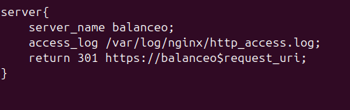

Práctica 2.5 - Proxy Inverso y balanceo de carga con SSL en NGINX
Introducción
A partir de las prácticas anteriores hemos creado un proxy inverso que actúa de intermediario entre dos servidores web, balanceando la carga entre ellos.
Una función que podía tener un proxy inverso era realizar el cifrado y descifrado de SSL, para utilizar HTTPS en los servidores web. De eta forma se aliviaba la carga de trabajo de los servidores web, ya que es una tarea que consume recursos.
Certificados
HTTPS se basa en el uso de certificados digitales.
Groso modo, cuando entramos en una web via HTTPS, esta nos presenta un certificado digital para asegurar que es quién dice ser. Para saber si este certificado es válido deberemos consultar a la Autoridad de certificación (CA).
Las CA son entidades que emiten certificados y su funcionamiento se basa en la confianza. Además, los navegadores web tienen pre cargadas las Autoridades de Certificación en las que confían por defecto a la hora de navegar por webs HTTPS.
;
Tarea
Partiendo de la configuración exacta de la práctica anterior, en donde teníamos el servidor proxy de balanceo de carga y los dos servidores web.
Deberemos añadir la configuración SSL para el cifrado del proxy inverso, para cualquier solicitud distinta a los servidores web
Creación del certificado autofirmado
Nosotros no usaremos certificados de ninguna CA de confianza, ya que:
- Nuestra página web no está publicada en Internet
- Y estos certificados son de pago.
Así que, crearemos nuestro propio certificado y lo firmaremos nosotros mismo como si fuésemos una CA auténtica.
Veamos, pues el proceso para generar los certificados y las claves asociadas a ellos (privada/pública). En primer lugar, debemos crear el siguiente directorio:
/etc/nginx/ssl
Podemos crear el certificado y las claves de forma simultánea con un único comando
sudo openssl req -x509 -nodes -days 365 -newkey rsa:2048 -keyout /etc/nginx/ssl/server.key -out /etc/nginx/ssl/server.crt, donde:
-
openssl: Es una herramienta por línea de comandos, que permite administras certificados, clave y otros archivos OpenSSL -
req: Este subcomando se utiliza para generar una solicitud de certificados y también solicitudes de firma de certificados (CSR).
-x509: Esto modifica aún más el subcomando anterior al decirle a la herramienta que queremos crear un certificado autofirmado en lugar de generar una solicitud de firma de certificado, como sucedería normalmente.
-nodes: Esto le dice a OpenSSL que omita la opción de asegurar nuestro certificado con contraseña. Necesitamos que Nginx pueda leer el archivo sin la intervención del usuario cuando se inicia el servidor. Una contraseña evitaría que esto sucediera, ya que, tendríamos que introducirla a mano después de cada reinicio.
-days 365: esta opción establece el tiempo durante el cual el certificado se considerará válido. Lo configuramos para un año.
-newkey rsa: 2048: Esto especifica que queremos generar un nuevo certificado y una nueva clave al mismo tiempo. No creamos la clave necesaria para firmar el certificado en un paso anterior, por lo que debemos crearla junto con el certificado.
-keyout: este parámetro le dice a OpenSSL dónde colocar el archivo de clave privada generado que estamos creando.
-out: Esto le dice a OpenSSL dónde colocar el certificado que estamos creando.
El comando quedaría así:
Configuración SSL en el proxy inverso
De la práctica anterior, dentro del directorio /etc/nginx/sites-availabe tenemos el archivo de configuración "balanceo". Es aquí donde realizaremos la configuración para que el acceso al sitio web se realice mediante SSL(HTTPS)
Es por esto dentro del bloque server{...} cambiaremos el puerto de escucha listen 80 por el siguiente bloque a continuación.
server {
listen 443 ssl;
ssl_certificate /etc/nginx/ssl/server.crt;
ssl_certificate_key /etc/nginx/ssl/server.key;
ssl_protocols TLSv1.3;
ssl_ciphers ECDH+AESGCM:DH+AESGCM:ECDH+AES256:DH+AES256:ECDH+AES128:DH+AESA128:ECDH+3DES:RSA+AESGCM:RSA+AES:RSA+3DES:!aNULL:!MD5:!DSS;
server_name balanceo;
access_log /var/log/nginx/https_access.log;
location / {
add_header Host servidor_proxy_acoronado;
proxy_pass http://backend_hosts;
}
}
Donde estamos diciendo que:
- Escuche en el puerto 443 (Puerto por defecto de HTTPS).
- El directorio donde está el certificado que hemos generado.
- El directorio donde está la clave que hemos generado anteriormente.
- Los protocolos y tipos de cifrados que se pueden utilizar -> Estas son las versiones de protocolos y los tipos de cifrados considerados seguros a día de hoy.
server_nameEs el nombre del servidor- Y por último el archivo donde se guardan los logs de acceso.
Comprobaciones
Warning
Si ahora intentamos acceder a https://balanceo debería de saltar un aviso de seguridad debido a que nuestro certificado es autofirmado.
- A pesar de esto recalcar que no pasa nada, ya que hemos sido nosotros los que hemos creado este certificado.
Para comprobar que los datos del certificado son correctos podemos comprobarlo así.
- Pulsamos en el candado de la barra de búsqueda
- Le damos a más información
- Y por último, ver certificado:
- Vemos los detalles del certificado:
Cuestión 1
Si ahora intentáis acceder a http://balanceo, ¿deberíais poder acceder? Comprobadlo y describid qué pasa y por qué.
- Si intentamos acceder a http://balanceo, nos deja acceder mediante http al servidor proxy, mostrando la web correctamente.
Redirección forzosa a HTTPS
Para que, indistintamente de la forma por la que accedamos al sitio web balanceo, siempre se fuerce a utilizar HTTPS, necesitaremos un bloque de configuración adicional.
Necesitamos añadir el siguiente bloque:
server{
listen 80;
server_name balanceo;
access_log /var/log/nginx/http_access.log;
return 301 https://balanceo$request_uri;
}
Con esta configuración estamos que:
- Se escúche el puerto 80 (HTTP)
- Que el nombre del servidor es balanceo
- Que guarde los logs en
/var/log/nginx/http_access.log - Y que cuando reciba una petición HTTP, devuelve un código HTTP 301(redireccionamiento)
Tarea1
- Eliminad del otro bloque server{…} las líneas que hagan referencia a escuchar en el puerto 80 (listen 80…). -Reiniciad el servicio
- Comprobad ahora que cuando entráis en http://balanceo, automáticamente os redirige a la versión segura de la web.
- Comprobad que cuando realizáis una petición en el archivo de log http_access.log aparece la redirección 301 y que, de la misma manera, aparece una petición GET en https_access.log.
- Eliminamos las lineas listen

- Reiniciamos el servicio
sudo systemctl restart nginx
- Comprobamos que cuando entramos en http://balanceo nos redirige a HTTPS
-
Access logs
- HTTP_ACCESS.log
- HTTPS_ACCESS.log
Cuestiones finales
Cuestión1
-Hemos configurado nuestro proxy inverso con todo lo que nos hace falta pero no nos funciona y da un error del tipo This site can't provide a secure connection, ERR_SSL_PROTOCOL_ERROR.
Dentro de nuestro server block tenemos esto:
server {
listen 443;
ssl_certificate /etc/nginx/ssl/enrico-berlinguer/server.crt;
ssl_certificate_key /etc/nginx/ssl/enrico-berlinguer/server.key;
ssl_protocols TLSv1.3;
ssl_ciphers ECDH+AESGCM:DH+AESGCM:ECDH+AES256:DH+AES256:ECDH+AES128:DH+AES:ECDH+3DES:DH+3DES:RSA+AESGCM:RSA+AES:RSA+3DES:!aNULL:!MD5:!DSS;
server_name enrico-berlinguer;
access_log /var/log/nginx/https_access.log;
location / {
proxy_pass http://red-party;
}
}
- Este error estar siendo provocado porque en
listen 443;no hemos puestolisten 443 ssl;
Cuestión 2
- Imaginad que intentamos acceder a nuestro sitio web HTTPS y nos encontramos con el siguiente error:

- Investigad qué está pasando y como se ha de solucionar.
- Esto sucede ya que el certificado que está usando la página no ha sido generado por ninguna Autoridad de certificación. Para solucionar este problema deberemos generar un certificado a través de dichas autoridades o para acceder a la web a pesar de este aviso establecer una excepción.